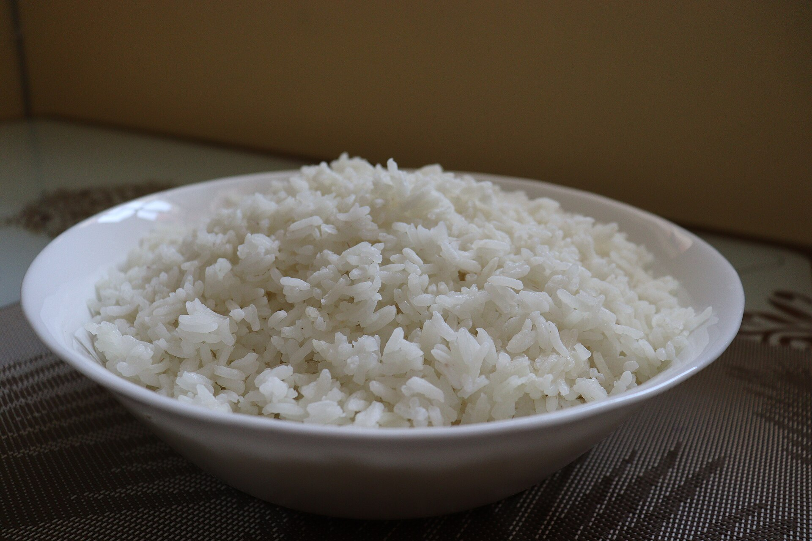

Home
White Rice

Photo by safaritravelplus, from Wikimedia Commons, licensed under CC0 1.0 Universal .
Description
Plain, white rice.
Ingredients
- 200g of white rice
- 400ml of water
- salt
Steps
- Wash the rice until the water runs mostly clear.
- Put the rice on a pan and add the 400ml of water. Let it rest for 10 minutes.
- Place the lid on the pan and place the pan over high heat until it boils.
- Reduce the heat to low and cook it for 10 minutes.
- Turn off the heat, let the rice rest, covered, for 10 minutes.
- Serve the rice.